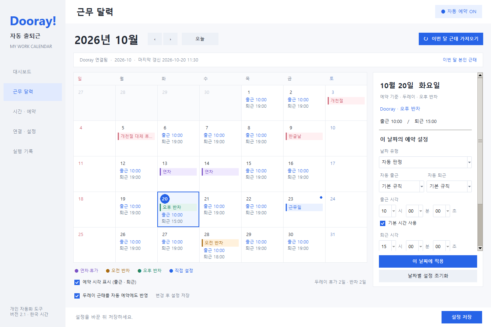

두레이를 사용하다 보면 기본 출퇴근 시각 외에도 연차, 오전·오후 반차, 공휴일과 대체근무일처럼 날짜마다 다른 설정이 필요합니다. 두레이 자동 출퇴근은 이런 일정과 출퇴근 예약을 Windows 앱 한곳에서 관리하도록 만든 개인 프로젝트입니다.
Windows 설치 파일과 소스 코드를 GitHub에 공개했습니다. 프로그램을 처음 접하는 분을 위해 핵심 기능과 설치 순서를 소개합니다.

달력에서 보고, 날짜별로 조정합니다
현재 월의 본인 두레이 근태를 가져오면 연차·휴가, 오전 반차, 오후 반차를 색상으로 구분해 보여줍니다. 날짜를 선택해 출근과 퇴근 예약을 각각 켜거나 끄고, 그날만 다른 시각을 지정할 수 있습니다.
두레이 근태를 보는 기능과 자동 예약에 반영하는 기능은 별도로 설정합니다. 자동 반영을 켜면 휴가일에는 예약을 제외하고 반차에는 설정한 퇴근 시각을 적용합니다. 반차에도 출근 시각은 원래 설정을 유지하며, 달력에서 직접 정한 값이 우선합니다.
시간은 드롭다운으로, 범위는 분과 초로
출근과 퇴근은 각각 고정 시각이나 랜덤 범위를 선택할 수 있습니다. 시·분·초 드롭다운과 범위 미리보기로 현재 설정이 언제 실행되는지 확인합니다.
예를 들어 기준 시각이 09:55이고 범위가 5분 30초 전 ~ 2분 15초 후라면, 하루의 예약 시각은 09:49:30~09:57:15의 모든 초 중 하나로 정해집니다. 같은 설정에서는 앱을 재시작해도 그날의 선택 시각이 유지됩니다.
연결과 업데이트도 앱에서 확인합니다
‘저장하고 연결 확인’은 로그인 성공 여부와 출퇴근 화면, 근태 조회 결과를 보여줍니다. SSO·OTP 등 추가 인증은 별도 브라우저에서 직접 처리할 수 있습니다. 연결 확인과 ‘점검 (기록 없음)’ 기능은 실제 출퇴근 기록을 만들지 않습니다.
새 버전은 ‘연결 · 설정’의 업데이트 버튼으로 내려받고 설치합니다. 배포 파일의 SHA-256을 확인하고 기존 계정·시간·달력·예약 ON/OFF를 보존합니다. 비밀번호는 Windows 자격 증명 관리자에 저장하며 배포 파일에 개인 설정을 넣지 않습니다.
설치는 네 단계입니다
- 최신 릴리스에서
-windows.zip파일을 받습니다. - 압축을 풀고 설치.bat을 실행합니다.
- 연결 · 설정에서 회사 주소와 계정을 입력하고 연결을 확인합니다.
- 시간 · 예약에서 출퇴근 시각을 설정한 뒤 저장하고 자동 예약 시작을 누릅니다.
상단에 ‘자동 예약 실행 중’이 표시되는지 확인하면 됩니다. 화면별 설명과 문제 해결은 설치·업데이트 안내에 정리했습니다.
사용할 때 알아둘 점
자동 예약은 PC가 켜져 있고 Windows에 로그인된 상태에서 동작합니다. 예약을 켠 뒤에는 앱 창을 닫아도 감시 프로그램이 유지되지만, PC 전원 OFF나 절전 상태에서는 예정 시각의 실행을 기대할 수 없습니다.
이 도구는 Dooray의 공식 프로그램이 아닌 개인 프로젝트이며, Dooray 화면이나 인증 방식이 바뀌면 연결 동작도 영향을 받을 수 있습니다. 실제 기록과 실행 로그를 확인하고, 문제가 있다면 버전과 재현 상황을 GitHub 이슈로 남겨주세요.
다운로드하고 사용 방법을 확인하세요.
소개 기준은 v2.1.6입니다. 최신 버전과 변경 사항은 GitHub 릴리스에서 확인할 수 있습니다.